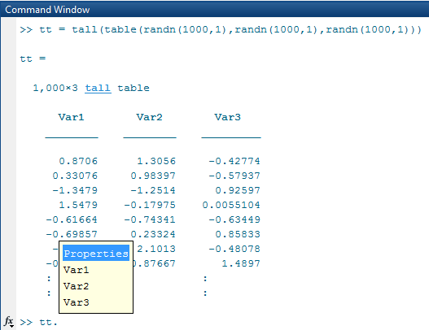

Index and View Tall Array Elements
Tall arrays are too large to fit in memory, so it is common to view subsets of the data rather than the entire array. This page shows techniques to extract and view portions of a tall array.
Extract Top Rows of Array
Use the head function
to extract the first rows in a tall array. head does
not force evaluation of the array, so you must use gather to
view the result.
tt = tall(table(randn(1000,1),randn(1000,1),randn(1000,1)))
tt =
1,000×3 tall table
Var1 Var2 Var3
________ ________ ________
0.53767 0.6737 0.29617
1.8339 -0.66911 1.2008
-2.2588 -0.40032 1.0902
0.86217 -0.6718 -0.3587
0.31877 0.57563 -0.12993
-1.3077 -0.77809 0.73374
-0.43359 -1.0636 0.12033
0.34262 0.55298 1.1363
: : :
: : :t_head = gather(head(tt))
t_head =
8×3 table
Var1 Var2 Var3
________ ________ ________
0.53767 0.6737 0.29617
1.8339 -0.66911 1.2008
-2.2588 -0.40032 1.0902
0.86217 -0.6718 -0.3587
0.31877 0.57563 -0.12993
-1.3077 -0.77809 0.73374
-0.43359 -1.0636 0.12033
0.34262 0.55298 1.1363Extract Bottom Rows of Array
Similarly, you can use the tail function
to extract the bottom rows in a tall array.
t_tail = gather(tail(tt))
t_tail =
8×3 table
Var1 Var2 Var3
________ ________ ________
0.64776 0.47349 -0.27077
-0.31763 1.3656 0.43966
1.769 -1.6378 -0.50614
1.5106 2.0237 -0.18435
0.16401 0.77779 0.402
-0.28276 -0.5489 0.53923
1.1522 -0.12601 -0.73359
-1.1465 0.29958 -0.26837Indexing Tall Arrays
All tall arrays support parentheses indexing. When you index a tall array using parentheses,
such as T(A) or T(A,B), the result is a new tall array
containing only the specified rows and columns (or variables).
Like most other operations on tall arrays, indexing expressions are not evaluated
immediately. You must use gather to evaluate the indexing operation.
For more information, see Lazy Evaluation of Tall Arrays.
You can perform these types of indexing in the first dimension of a tall array:
B = A(:,…), where:selects all rows inA.B = A(idx,…), whereidxis a tall numeric column vector or non-tall numeric vector.B = A(L,…), whereLis a tall or non-tall logical array of the same height asA. For example, you can use relational operators, such astt(tt.Var1 < 10,:). When you index a tall array with a tall logical array, there are a few requirements. Each of the tall arrays:Must be the same size in the first dimension.
Must be derived from a single tall array.
Must not have been indexed differently in the first dimension.
B = A(P:D:Q,…)orB = A(P:Q,…), whereP:D:QandP:Qare validcolonindexing expressions.head(tt,k)provides a shortcut fortt(1:k,:).tail(tt,k)provides a shortcut fortt(end-k:end,:).
Additionally, the number of subscripts you must specify depends on how many dimensions the array has:
For tall column vectors, you can specify a single subscript such as
t(1:10).For tall row vectors, tall tables, and tall timetables, you must specify two subscripts.
For tall arrays with two or more dimensions, you must specify two or more subscripts. For example, if the array has three dimensions, you can use an expression such as
tA(1:10,:,:)ortA(1:10,:), but not linear indexing expressions such astA(1:10)ortA(:).
Tip
The find function locates nonzero elements in
tall column vectors, and can be useful to generate a vector of indices for elements that
meet particular conditions. For example, k = find(X<0) returns the
linear indices for all negative elements in X.
For example, use parentheses indexing to retrieve the first
ten rows of tt.
tt(1:10,:)
ans =
10×3 tall table
Var1 Var2 Var3
________ ________ ________
0.53767 0.6737 0.29617
1.8339 -0.66911 1.2008
-2.2588 -0.40032 1.0902
0.86217 -0.6718 -0.3587
0.31877 0.57563 -0.12993
-1.3077 -0.77809 0.73374
-0.43359 -1.0636 0.12033
0.34262 0.55298 1.1363
: : :
: : :Retrieve the last 5 values of the table variable Var1.
tt(end-5:end,'Var1')ans =
6×1 tall table
Var1
________
1.769
1.5106
0.16401
-0.28276
1.1522
-1.1465Retrieve every 100th row from the tall table.
tt(1:100:end,:)
ans =
10×3 tall table
Var1 Var2 Var3
_________ _________ ________
0.53767 0.6737 0.29617
0.84038 -0.041663 -0.52093
0.18323 1.3419 0.052993
0.079934 -0.40492 -1.6163
0.26965 -1.5144 0.98399
-0.079893 -1.6848 -0.91182
0.47586 -2.1746 1.1754
1.9085 -0.79383 0.18343
: : :
: : :Extract Tall Table Variables
The variables in a tall table or tall timetable are each tall arrays of different
underlying data types. Standard indexing methods of tables and timetables also apply to tall
tables and tall timetables, including the use of timerange, withtol, and vartype.
For example, index a tall table using dot notation T.VariableName to
retrieve a single variable of data as a tall array.
tt.Var1
ans =
1,000×1 tall double column vector
0.5377
1.8339
-2.2588
0.8622
0.3188
-1.3077
-0.4336
0.3426
:
:Use tab completion to look up the variables in a table if you
cannot remember a precise variable name. For example, type tt. and then press Tab.
A menu pops up:

You can also perform multiple levels of indexing. For example,
extract the first 5 elements in the variable Var2.
In this case you must use one of the supported forms of indexing for
tall arrays in the parentheses.
tt.Var2(1:5)
ans =
5×1 tall double column vector
0.6737
-0.6691
-0.4003
-0.6718
0.5756See Access Data in Tables or Select Times in Timetable for more indexing information.
Concatenation with Tall Arrays
In order to concatenate two or more tall arrays, as in [A1 A2 A3 …],
each of the tall arrays must be derived from a single tall array and must not have been
indexed differently in the first dimension. Indexing operations include functions such as
vertcat, splitapply, sort,
cell2mat, synchronize,
retime, and so on.
For example, concatenate a few columns from tt to create a new tall
matrix.
[tt.Var1 tt.Var2]
ans =
1,000×2 tall double matrix
0.5377 0.6737
1.8339 -0.6691
-2.2588 -0.4003
0.8622 -0.6718
0.3188 0.5756
-1.3077 -0.7781
-0.4336 -1.0636
0.3426 0.5530
: :
: :To combine tall arrays with different underlying datastores, it is recommended that you
use write to write the arrays (or calculation
results) to disk, and then create a single new datastore referencing those locations:
files = {'folder/path/to/file1','folder/path/to/file2'};
ds = datastore(files);Assignment and Deletion with Tall Arrays
The same subscripting rules apply whether you use indexing to assign or delete elements from a
tall array. Deletion is accomplished by assigning one or more elements to the empty matrix,
[].
“( )” Assignment
You can assign elements into a tall array using the general syntax A(m,n,...) =
B. The tall array A must exist and have a nonempty second
dimension. The first subscript m must be either a colon
: or a tall logical vector. With this syntax, B
can be:
Scalar
A tall array derived from
A(m,…)wheremis the same subscript as above. For example,A(m,1:10).An empty matrix,
[](for deletion)
“.” Assignment
For table indexing using the syntax A.Var1 = B,
the array B must be a tall array with the appropriate
number of rows. Typically, B is derived from existing
data in the tall table. Var1 can be either a new
or existing variable in the tall table.
You cannot assign tall arrays as variables in a regular table, even if the table is empty.
Extract Specified Number of Rows in Sorted Order
Sorting all of the data in a tall array can be an expensive calculation. Most often, only a subset of rows at the beginning or end of a tall array is required to answer questions like “What is the first row in this data by year?”
The topkrows function
returns a specified number of rows in sorted order for this purpose.
For example, use topkrows to extract the top
12 rows sorted in descending order by the second column.
t_top12 = gather(topkrows(tt,12,2))
Evaluating tall expression using the Local MATLAB Session:
Evaluation completed in 0.067 sec
t_top12 =
12×3 table
Var1 Var2 Var3
________ ______ ________
-1.0322 3.5699 -1.4689
1.3312 3.4075 0.17694
-0.27097 3.1585 0.50127
0.55095 2.9745 1.382
0.45168 2.9491 -0.8215
-1.7115 2.7526 -0.3384
-0.21317 2.7485 1.9033
-0.43021 2.7335 0.77616
-0.59003 2.7304 0.67702
0.47163 2.7292 0.92099
-0.47615 2.683 -0.26113
0.72689 2.5383 -0.57588Summarize Tall Array Contents
The summary function returns useful information
about each variable in a tall table or timetable, such as the minimum and maximum values of
numeric variables, and the number of occurrences of each category for categorical
variables.
For example, create a tall table for the outages.csv data
set and display the summary information. This data set contains numeric,
datetime, and categorical variables.
fmts = {'%C' '%D' '%f' '%f' '%D' '%C'};
ds = tabularTextDatastore('outages.csv','TextscanFormats',fmts);
T = tall(ds);
summary(T)Evaluating tall expression using the Local MATLAB Session:
- Pass 1 of 2: Completed in 0.16 sec
- Pass 2 of 2: Completed in 0.19 sec
Evaluation completed in 0.46 sec
Variables:
Region: 1,468×1 categorical
Values:
MidWest 142
NorthEast 557
SouthEast 389
SouthWest 26
West 354
OutageTime: 1,468×1 datetime
Values:
Min 2002-02-01 12:18
Max 2014-01-15 02:41
Loss: 1,468×1 double
Values:
Min 0
Max 23418
NumMissing 604
Customers: 1,468×1 double
Values:
Min 0
Max 5.9689e+06
NumMissing 328
RestorationTime: 1,468×1 datetime
Values:
Min 2002-02-07 16:50
Max 2042-09-18 23:31
NumMissing 29
Cause: 1,468×1 categorical
Values:
attack 294
earthquake 2
energy emergency 188
equipment fault 156
fire 25
severe storm 338
thunder storm 201
unknown 24
wind 95
winter storm 145 Return Subset of Calculation Results
Many of the examples on this page use gather to
evaluate expressions and bring the results into memory. However, in
these examples it is also trivial that the results fit in memory,
since only a few rows are indexed at a time.
In cases where you are unsure if the result of an expression
will fit in memory, it is recommended that you use gather(head(X)) or gather(tail(X)).
These commands still evaluate all of the queued calculations, but
return only a small amount of the result that is guaranteed to fit
in memory.
If you are certain that the result of a calculation will not
fit in memory, use write to evaluate the tall
array and write the results to disk instead.
See Also
tall | table | topkrows | head | tail | gather